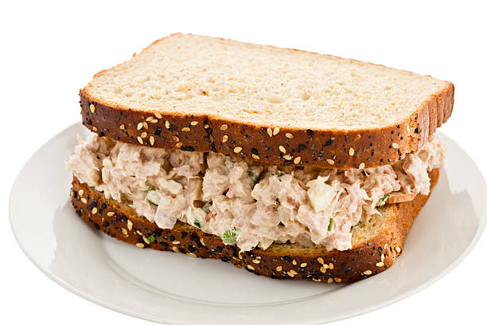

Tuna Fish Sandwhich

By the end of this recipe, you'll have a pixel perfect tuna sandwhich!
Ingrediants
- Bread
- Can of Tuna
- Mayonaise
- Salt
- Pepper
- Pickle Juice
Steps
- Start by draining the water out of a can of tuna and placing the left over contents in a bowl.
- Next, we'll grab our Mayo and for every can of tuna we do roughly 2 generious spoon fulls.
- For every can of tuna give yourself a couple shakes of salt and pepper. If you like more, you can add more to taste.
- Add some pickle juice for some tang. Don't go too crazy otherwise the tuna will get liquidy. Unless of course you like it this way.
- Mix the contents together with your spoon until fully incorporated.
- Place your bread of choice on a plate, and add your delicous Tuna to the bread.
- Add what ever else you may like. Some people like to add cheese, or pickles - it's entirely up to you.
- Enjoy!
Home